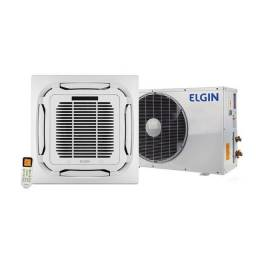
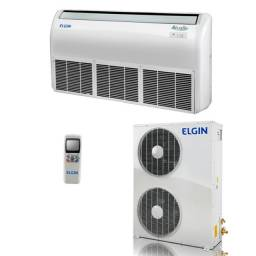
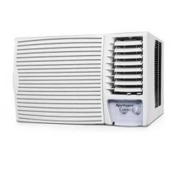

Popular por ser um seu sistema de climatização de alta eficiência, o ar-condicionado Split é um sistema
silencioso e discreto para diversos tipos de ambientes, tanto residenciais quanto comerciais.
Esses sistemas possuem duas partes básicas: um condensador instalado ao ar livre e uma evaporadora
compacta
que é colocada estrategicamente dentro do espaço que você deseja climatizar.
Os aparelhos de ar condicionado Split são confortáveis por sua alta eficiência de refrigeração, operação
silenciosa e perfis finos em seu espaço. Por isso, são indicados para quem quer um aparelho discreto, de
fácil instalação, muito indiciados para climatizar ambientes residenciais e comerciais, de forma
eficiente,
deixando-os agradáveis e confortáveis.
O Split Cassete segue o mesmo estilo de funcionamento do Split comum, porém é adaptado ao teto do ambiente (no centro) e não nas laterais, o que libera espaços para artigos decorativos nas paredes. Esse modelo é bem discreto e conta com um alto desempenho, unido a baixo nível de ruído por ser embutido no forro. Por ficar instalado no centro do ambiente, ele também proporciona melhor climatização, sendo indicado para escritórios grandes, como os chamados open office, tendência que centraliza todos os departamentos de uma empresa em uma mesma área, sem divisão de paredes.
 O Split Inverter é exatamente igual ao Split comum fisicamente, porém, em seu motor interno, ele
possui uma
peça chamado Inversor, que trabalha controlando o compressor do aparelho (responsável pelo fluxo do
ar no
circuito interno do mesmo) para que ele funcione de forma otimizada e reduza o consumo de energia.
Resultado: os Split Inverter possuem uma eficiência energética muito maior do que os demais modelos,
reduzindo em até 60% o consumo de energia, ao mesmo tempo que apresenta melhor controle da
temperatura. Além
disso, ele apresenta baixo nível de ruído e ainda utiliza gás R-410ª , um gás ecológico que não
agride a
camada de ozônio. São indicados para quem tem o consumo de energia como um das suas principais
preocupações.
O próprio nome já dá uma dica: esse é um modelo de ar-condicionado que permite a instalação no piso ou no teto. No entanto, as suas características vão muito além do óbvio. O ar-condicionado piso teto é encontrado em equipamentos com capacidades maiores, indo de 18.000 a 80.000 BTUs. Possuem a aparência de um Split Tradicional, mas por ser maior, ele é muito usado em escolas, escritórios, hospitais, postinhos de saúde, lojas e normalmente em espaços onde um Split Tradicional não iria conseguir manter refrigerado.
Modelo mais clássico, o ar-condicionado de janela é projetado para ser instalado dentro de uma janela padrão ou, em alguns casos, através de um furo feito na parede. Esses aparelhos, então, ficam com o sistema de escape de ar quente voltado para fora e o sistema de retorno de ar fresco voltado para dentro. Geralmente são opções eficientes para climatizar quartos pequenos ou grandes. Contudo, por serem fabricados com uma tecnologia mais antiga, eles podem ser mais barulhentos e consumir mais energia. Os recursos que eles podem oferecer incluem temporizadores programáveis.
